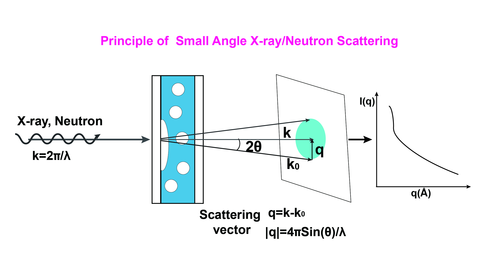
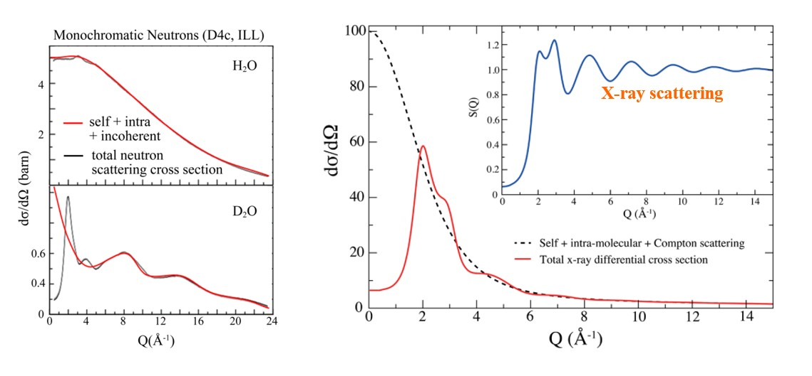
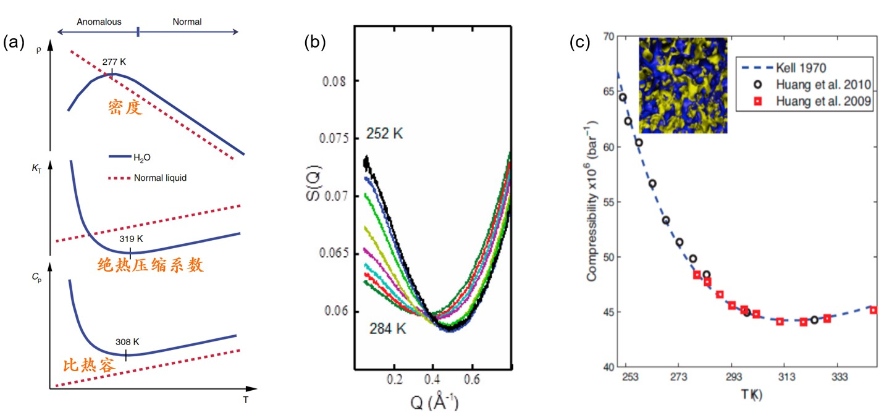
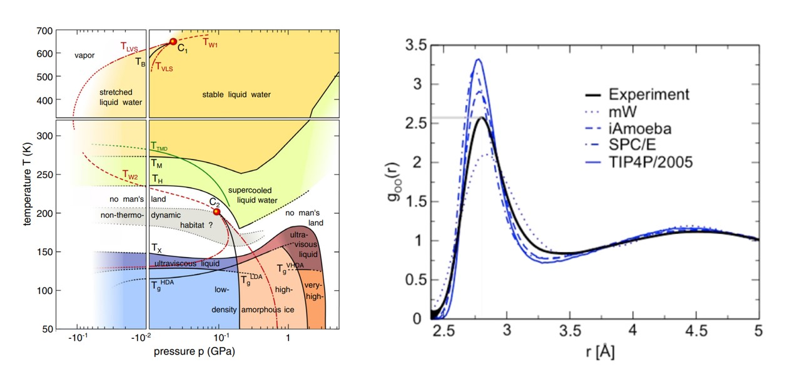

利用中子散射探究水的微观结构
# 中子散射简介
中子散射的基本原理为入射中子同原子核发生碰撞后发生动量和能量交换后，通过测量散射后的中子的分布和强度等信息，进而探究物质从纳米到微米尺度的微观结构信息。由于中子不带电，其穿透能力深；中子对氢原子的散射截面远大于其他元素，非常适合对富含氢元素的物质比如生物分子、各类液体等进行探测；同位素之间电子数相同，仅原子核的中子数存在差异，因而相较于 X 射线散射，中子散射用于同位素探测具有很高敏感度；中子本身具有磁矩，能用于研究磁性物质的微观磁畴结构及其自旋动力学。
中子的散射过程主要包括两种，一种是散射后中子波矢量同入射中子波矢量大小相同，方向不同，称之为相干弹性散射；另外一种其动量和能量均发生变化，为非相干散射。目前中子散射中最常用的方法为中子小角散射，为弹性散射，其探测的为散射后中子波矢量在一个很小的空间角度（通常 2θ<3°）内的强度分布[1]。中子 / X 射线小角散射的基本原理图如图 1 所示。

# 中子散射探测水结构的基本原理
考虑入射中子束 (强度为 ) 通过对于一个厚度为 l 和单位厚度透过率为 T 的样品，在入射中子波矢 q 的方向上立体角 内的其散射强度 表示为：
其中 为微分散射截面，其仅与样品内原子分子本身的成分及其结构相关。样品的微分散射截面 包括三个部分：
（1）分子内原子自身的对散射的贡献，由非相干和相干散射两部分组成。
（2）分子内不同原子间共同对中子散射的贡献
（3）分子间的结构对中子散射的贡献
对于分子液体，其散射的结构因子由两部分组成：
为分子自身的结构贡献， 代表因液体分子之间相互作用所产生的结构的贡献。
其中:
为液体分子数密度， 为热能， 为液体的绝热压缩系数； 为单个原子核的散射相干长度。
对于液体自身的结构，其最重要的表征参数就是液体内原子间的径向分布函数（对关联函数），其表示在距离一个特定原子一定距离 r 内寻找到另外一个原子的密度几率，其傅里叶积分形式同结构因子中分子间的贡献 关系表示如下：
通过测量样品的中子散射强度分布等信息，得到对应微分散射截面，在通过傅里叶积分解析出对应的原子间的径向分布函数，从而能够获取到液体内部的结构信息。但由于散射过程通常包含了相干和非相干散射，会涉及到多次散射叠加、长程衰减等复杂多体过程，其数据分析极富挑战性，准确解析出 十分困难，数据处理中的噪声和不相干的因素需要极其细致的处理，否则很容易导致错误的数据分析结果。
# 中子散射研究水结构的主要进展
# 液态水结构和四面体模型

通常对于液态水的结构的 “教科书” 的认知是水分子之间会形成如图（2b）的四面体结构，O-H-O 形成氢键结构，一个水分子最多会形成四个氢键。然而液态水的中子和 X 射线的实验数据并不支持这种有序结构。图 2（c）中主要 O-O 的对关联函数，其两个主要峰处于 2.8 和 4.5 ，是四面体模型的结果的几乎 1.633 倍，并且展宽比较大，说明液态水中的 O-O-O 的角度并非四面体中 ，而是更宽并且是很多角度的叠加，这些散射结果均表明液态水的结构远非标准的四面体模型，也与固体冰中的有序结构有着显著差别，而是更加无序化。目前关于液态水结构的一个普遍认同是液态水呈现出短程无序，并具有一定的长程有序性。
# 同位素效应

图3：不同中子散射技术得到的 $H_2O$ 和 $D_2O$ 的微分散射截面对比图 3 显示两种不同的中子散射技术得到 和 的散射微分截面，相比于 X 射线散射只对 O 原子敏感，中子散射对氢元素的同位素（H 和 D）非常敏感，从而为准确获取 O-H 和 H-H 的结构参数带来了可能。但由于中子质量和氢原子质量相近，中子散射过程非相干散射和非弹性效应（能量交换）更为显著，对散射截面会带来明显的衰减，这使得数据分析变得困难。常用的策略是通过测量 和 以及 和 的差异来消除这些非相干项，从而获取仅与水分子间结构相关联的信息。
# 液态水的反常特性

图4：液态水的反常特性（a）不同温度下中子散射得到的液态水的结构因子（b）小角X射线散射得到液态水的绝热压缩系数（红/黑框）同热力学方法得到的结果（虚线）相符（c）相比于其他的液体，液态水具有许多非凡的反常特性，这也是被认为是水是生命之源的神奇之处的原因[2]。图 4（a）展示了液态水的三个主要反常特性：密度、绝热压缩系数和比热容。中子散射的结果能够获取水的结构因子和其对应的绝热压缩常数，其在不同温度下的转变同液态水的绝热压缩系数的反常特性基本一致，如图 4（b）和（c）所示，所求得的绝热压缩系数也与热力学方法的测量结果高度一致。这些结果表明中子散射得到的液态水结构与其反常特性能够直接关联起来，为理解液态水的众多反常特性提供了绝佳的契机。对这一结果的分析，有一种观点提出液态水的内在结构是由两类液体结构即高密度液体 high-density-liquid (HDL) 和低密度液体 low-density-liquid (LDL) 组成[1:1]。然而对于中子散射的结果的解析，不同课题组的观点迥异，对液态水结构的认识依旧充满争议。不管在实验和理论上，未来的研究工作都需要更加深入细致的实验设计和数据解析，才可能进一步加深对水结构及其诸多反常特性的认知。
# 非晶相水结构的研究和理论模型的不足

图5：水结构研究中的no man’s land 和模拟计算中常用水模型对液态水O-O的对关联函数的预测同实验数据存在显著差异。关于水的性质的研究过去的百年中始终是基础研究的一个重要方向，水的 T-P 相图如图（5）所示，其中存在一个区域其热力学的特性科学界至今毫无头绪，被称之为 no man’s land。中子和 X 射线散射技术作为近几十年来得以快速发展的崭新技术，其在揭示这些关于水结构的不为人知的区间具有巨大的潜力；另一方面，目前无论是分子模拟、密度泛函理论等，其对水结构的预测往往与实验背道而驰，图 5（b）展示了四种理论计算中普遍常用的水模型对液态水的 O-O 对关联函数的第一个峰的计算结果，无一能够符合中子散射的实验结果，表明目前我们理论上对水结构的认识还有很长的路要走。总之，深入理解这些非晶相的水结构将会提升我们对许多重要的物化反应、生命过程和水文海洋等环境演变的认知，极大的促进水科学及其相关应用领域的发展。
# 图片说明
[1]：中子 / X 射线小角散射的基本原理图
[2]：水分子的结构（a）和氢键构型（b）[3]，（c）中子散射得到的液态水内原子间的径向分布函数[1:2] 。
[3]：不同中子散射技术得到的 和 的微分散射截面对比
[4]：液态水的反常特性（a）不同温度下中子散射得到的液态水的结构因子（b）小角 X 射线散射得到液态水的绝热压缩系数（红 / 黑框）同热力学方法得到的结果（虚线）相符（c）[1:3]
[5]：水结构研究中的 no man’s land[4] 和模拟计算中常用水模型对液态水 O-O 的对关联函数的预测同实验数据存在显著差异[1:4]。
# 参考文献
Amann-Winkel, K. et al., X-ray and Neutron Scattering of Water. Chem. Rev. 2016, 116 (13), 7570-89. DOI ↩︎ ↩︎ ↩︎ ↩︎ ↩︎
Peng, J.; Guo, J.; Jiang, Y., Probing surface water at submolecular level with scanning probe microscopy. SCIENTIA SINICA Chimica 2019, 49 (3), 536-555. DOI ↩︎
Amann-Winkel, K. et al., Colloquium: Water’s controversial glass transitions. Rev. Mod. Phys. 2016, 88 (1). DOI ↩︎